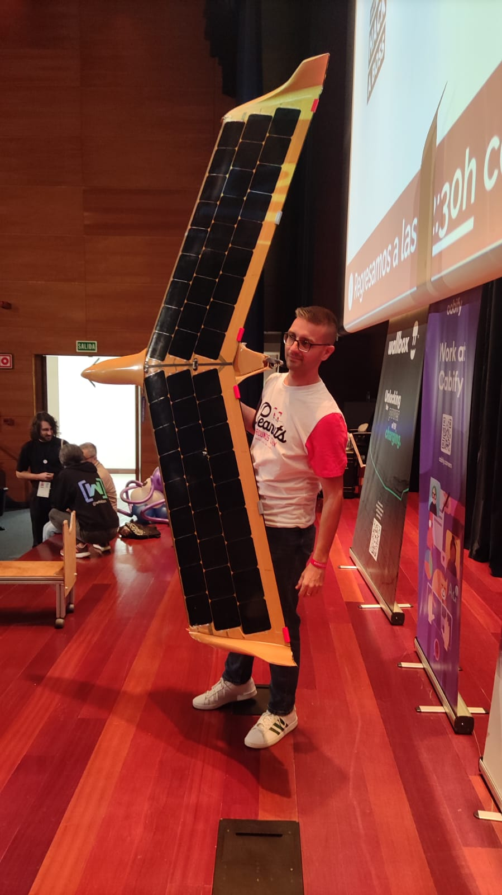

Pulpocon is, for me, one of the best conferences in Spain. The level of speakers and attendees is just crazy for a conference located in Vigo-Spain, and I couldn't imagine this conference ten years ago.
This year has been challenging for me, and being able to speak at this incredible conference was a bit of energy and fear at the highest level.
I spoke about Edge Computing, what I think will be the future, how things change, and what will mark a difference. I think many things will change in the next 4-6 years.
Here are my slides:
Many thanks to Rolando, Patri and Sergio for giving me this opportunity. At the same time, many thanks to Gradiant, Marine Instruments and Wallbox for trusting me to provide details about their Edge computing projects.
And thanks to all attendees for all the feedback. At the same time, I'm sorry for not flying a three-meter drone inside the auditorium, but this drone get from 0 to 200km in 3 seconds, so I'm sorry for not killing a bunch of you :-)